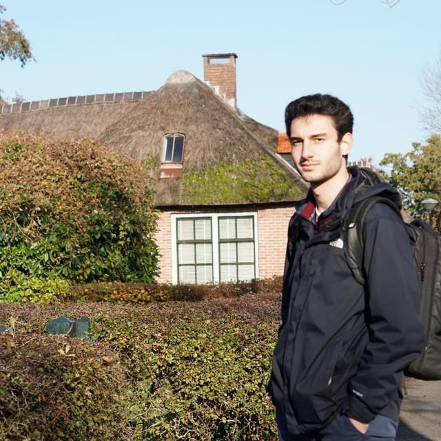

About me
I attended my bachelor's degree at the University of Trento, enrolled in the Computer Science track.
Here I acquired wide knowledge about several aspects of the IT stack, studying programming, networking, algorithm analysis and design, database management and computer security. During this experience I also worked at the Bruno Kessler Foundation as a Cyber Security Analyst intern, where I studied the state of the art regarding web vulnerabilities and developed a Java tool to test SAML SSO architectures. My bachelor thesis was carried out on this topic and awarded with a final mark of 29/30.
After this experience, I started my Master's degree at the EIT Digital Master School, choosing Data Science as specialization. I spent my first year in Enschede (The Netherlands), at the University of Twente. Here I completed several projects related to Data Science and Machine Learning, especially in the medical field, thanks to the cooperation between the University of Twente and the Medisch Spectrum Twente, the local hospital of the city. Other assignments involved Big Data Management, Information statistics and Product management.
During the summer, I also attended a Summer School as part of my master, at the Technical University of Madrid (Spain), where the topic was "Disrupting Finance with Digital Technologies".
To complete my master, I chose Aalto University as my second year institution, located in Espoo (Finland). Here I studied more in depth Machine Learning methods, analysis of Complex Networks and Automatic Speech Recognition.
